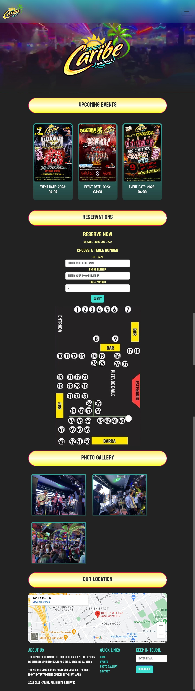
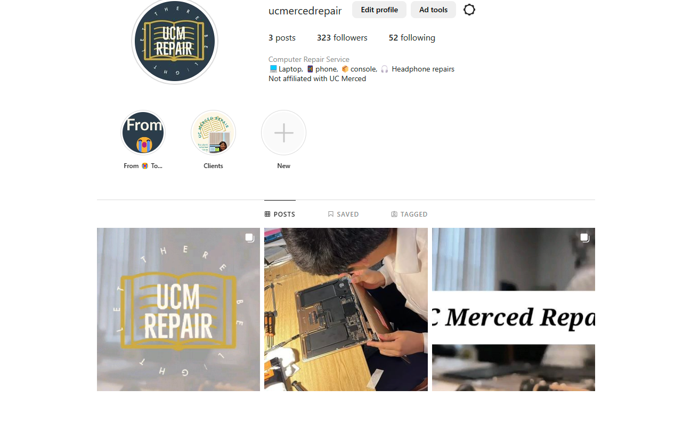
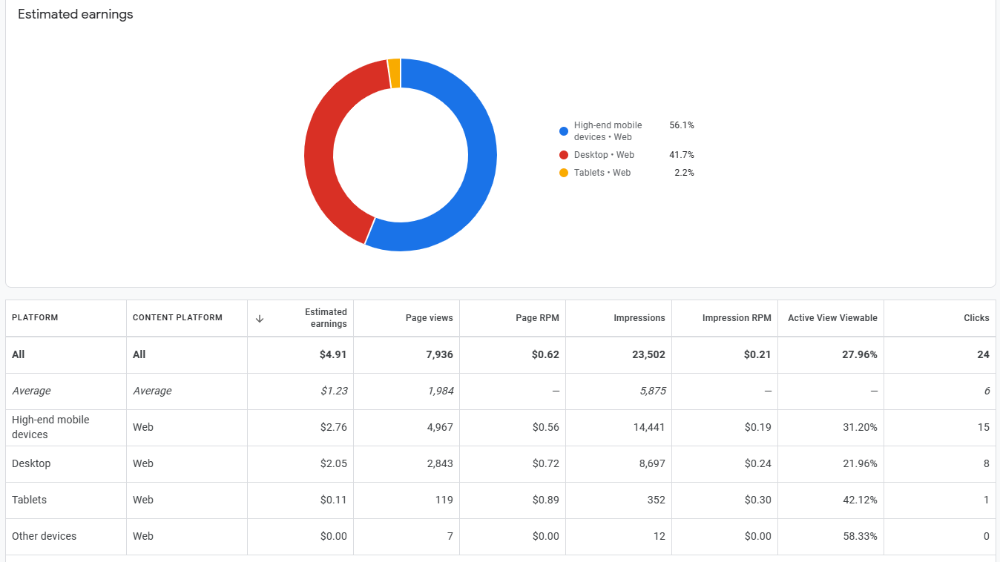
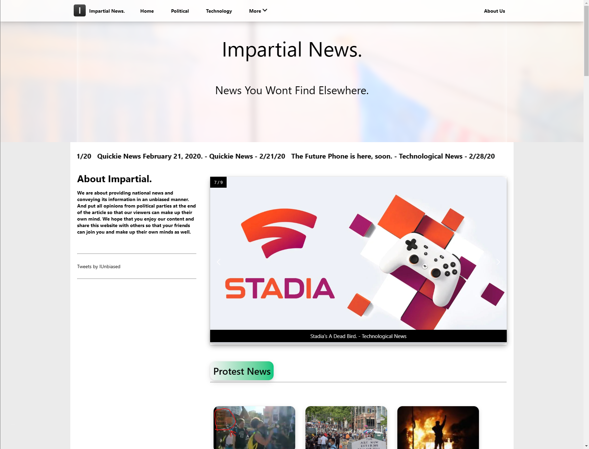
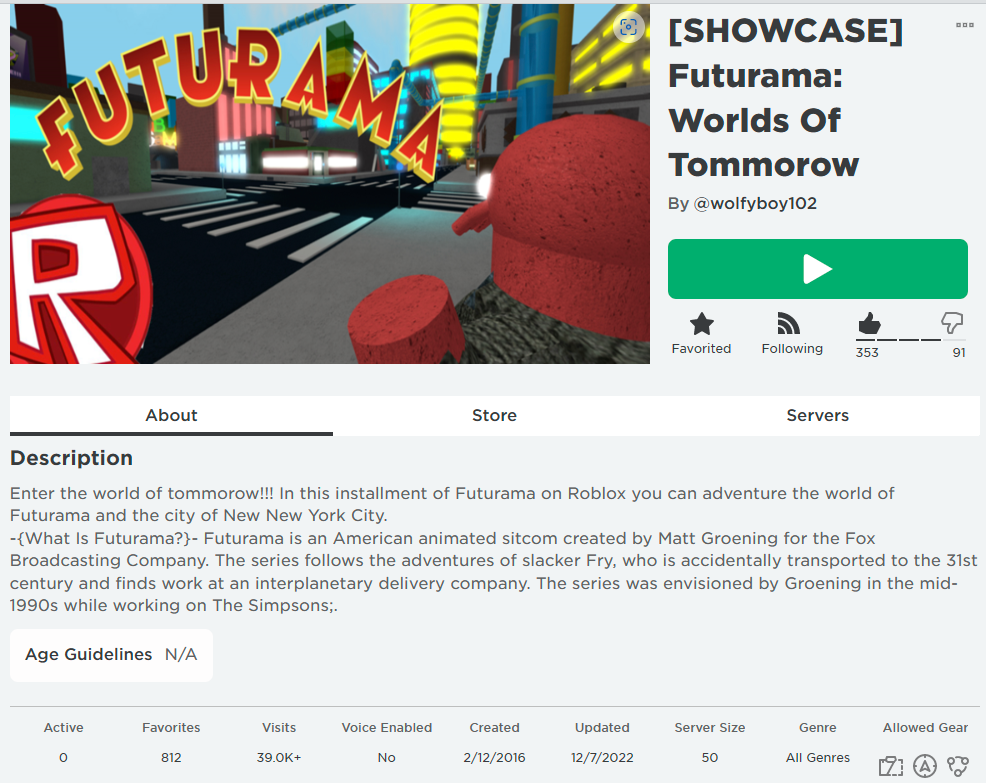
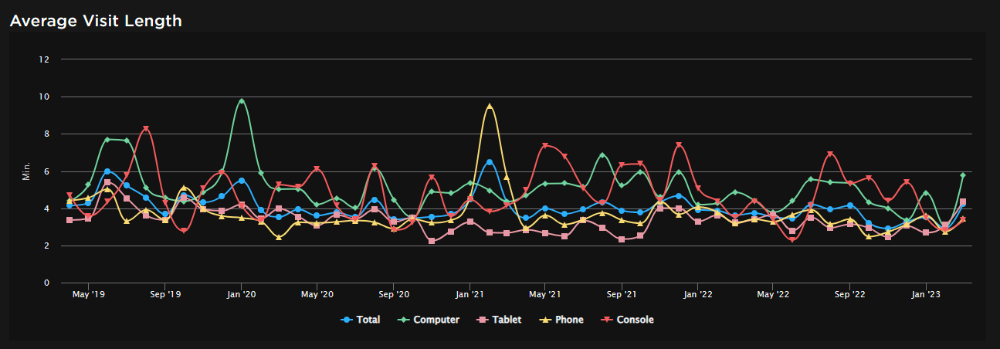
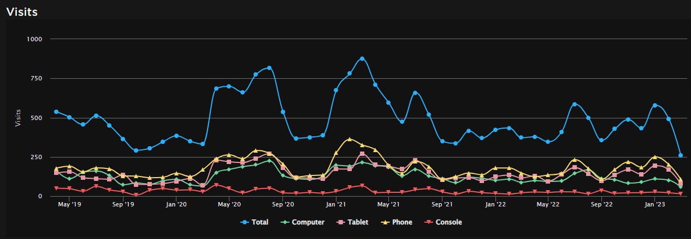
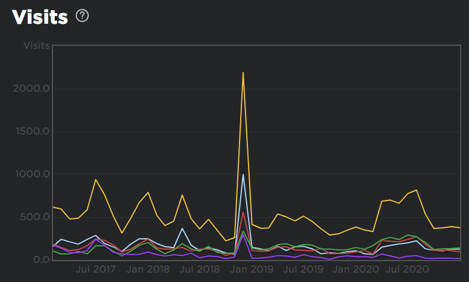

Experience
Full Stack Web Developer
Club Caribe de San Jose is a popular nightclub in San Jose. The website for the club was designed and coded by myself, including the layout, design, and reservation server system. The website provides an easy and convenient way for customers to make reservations and book tables for their events. With its user-friendly interface and seamless design, the website has helped the club attract more customers and boost its revenue. The website is also optimized for mobile devices, ensuring that customers can make reservations on the go. Overall, the website has played a vital role in the success of Club Caribe de San Jose.
Intern at Business Society Club
During my internship with the Business Society club at the University of California, Merced, I participated in a group competition focused on creating a business or service targeting UC Merced students. Our group opted for a tech repair business, a field I was already familiar with. I was tasked with creating promotional flyers and handling other graphic design needs for our project. Notably, the graphic design ideas I developed for the group project were subsequently integrated into my own tech repair business. This experience not only led our team to victory in the competition but also provided me with the opportunity to refine my graphic design skills in a practical setting.
Founder/CEO of UC Merced Repair
As a student at the University of California Merced, I had the opportunity to put my technical skills to the test by founding a tech repair business. This venture allowed me to gain hands-on experience in troubleshooting and repairing a variety of hardware and software issues, as well as develop my entrepreneurial and leadership skills. I was responsible for everything from marketing the business and building relationships with clients. Through this experience, I gained a deep understanding of the technical and business aspects of running a successful tech repair company, and I am eager to bring these skills to my next challenge.
Founder/CEO of Impartial News
When I was a high school student, I embarked on a challenging and rewarding project by founding an independent news website. I had a passion for journalism and a drive to share my perspective and insights with a wider audience. I leveraged my coding skills to build the website from scratch, and I worked hard to monetize it through various advertising channels. My efforts paid off, as the website quickly grew in popularity and reached thousands of readers. Through this experience, I gained valuable experience in coding, marketing, and leadership, and I am proud of what I was able to achieve as a young entrepreneur. I am eager to continue growing my skills and making a positive impact through my work.
 Roblox Game Development
In middle school, I developed a Roblox game that recreates the futuristic New York City from the TV show Futurama. I poured countless hours into designing every aspect of the city and adding intricate details to make players feel like they were truly exploring New New York. Now, with over 39,000 people having played the game and hundreds of people continuing to play it, it's surreal to think that something I created has brought joy to so many. Developing the game has been my creative outlet and escape from the stress of everyday life, and I will always cherish the memories and experiences that came with it.
   